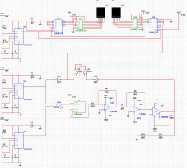
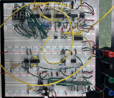

The Challenge
Build a range detector from scratch using only discrete analog and digital components — no microcontrollers, no pre-built sensor modules. The circuit must measure distances from 10 cm to 1 meter with accuracy within 1 cm, and display the result in real-time on a two-digit 7-segment display.
Three-Module Architecture
The system was designed as three interconnected modules, each solving a distinct signal processing problem:
- Transmitter module — two 555 timers (1 Hz gating clock and 40.6 kHz carrier) ANDed together to produce modulated ultrasonic bursts, preventing signal overlap between transmission and reception cycles
- Receiver module — a two-stage inverting amplifier (gain of 272×) to boost the millivolt-scale echo signal, followed by an inverting Schmitt trigger to convert the amplified analog signal into a clean digital pulse
- Display module — a 17.5 kHz master clock driving BCD counters gated by an SR latch, with binary-to-7-segment decoders for the tens and ones digits
Signal Chain Design
The transducer's optimal frequency was determined experimentally at 40.6 kHz using an oscilloscope and frequency sweep. The echo signal arrives at only 6–9 mV peak — far too small for digital logic. The two-stage amplifier uses LM358 op-amps, each at a gain of 16.5× (chosen just below the 17.2× gain-bandwidth limit at 40.6 kHz to maintain stability), producing a combined gain of 285× — enough to drive the Schmitt trigger reliably.
The distance calculation relies on the speed of sound: each centimeter of range corresponds to a time delay of approximately 1/17,150 seconds. A 17.5 kHz master clock drives BCD counters that start counting when the transmit burst fires and stop when the Schmitt trigger detects the echo. The counter value at stop directly represents the distance in centimeters.


Lab Implementation
The entire circuit was constructed on breadboards using discrete components: TLC555 timers, LM358 op-amps, an LM311 comparator (Schmitt trigger), 74HC451 BCD counters, 74HC32 NOR gates (SR latch), 74HC04 NOT gates, and 4511 BCD-to-7-segment decoders. Each module was built and verified independently using oscilloscope measurements before integration.
Component tolerances required adjustment from theoretical values — the 1 Hz clock used a 235 µF capacitor (vs. calculated 266 µF) achieving 1.17 Hz, while the 17.5 kHz clock used 17.2 nF achieving 17.52 kHz. These discrepancies were traced to parasitic capacitance in the breadboard rails and were compensated empirically.
Outcome
The completed circuit accurately measures distances within 1 cm of true value across the full 10–100 cm range, displaying results in real time on the dual 7-segment display. The project demonstrates end-to-end analog and digital circuit design: signal generation, multi-stage amplification, analog-to-digital conversion, timing logic, and display driving — all from discrete components.